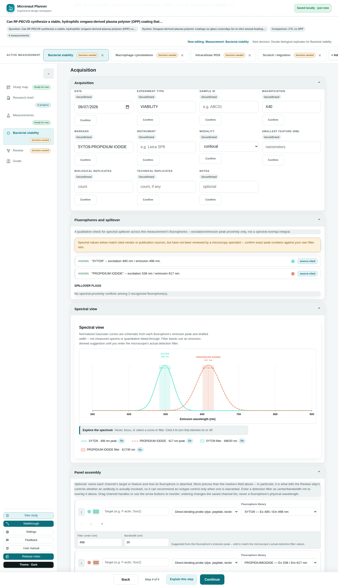

Chapter 6
Acquisition & the Spectral View
Where you decide how a measurement will actually be acquired — modality, magnification, markers — and where Micronaut checks your fluorophores for spectral spillover before you're at the microscope.
What you'll be able to do
- Find the Acquisition section on a measurement's page, and know what its five collapsible parts each cover.
- Enter your markers/fluorophores and read the qualitative spillover check the app runs over them.
- Tell apart the five states a single marker can resolve to, and what each one is telling you.
- Read the Spectral view's plotted curves, including its color swatches and detection-filter overlays.
- Build a structured channel table with Panel assembly, including the one-time "Seed from markers field" shortcut.
- Say precisely which conjugation modes count as "an antibody is involved" for the Review step's controls.
- Know where modality-specific guidance (STED, confocal, widefield, and others) comes from, and that it is unreviewed content.
Where Acquisition lives
Acquisition is the middle of a measurement's three sections — after Samples & design, before Data plan — all on the one page you land on when you open a measurement from the registry (see Measurements Registry). The anchor rail at the top of that page jumps straight to it.
Acquisition itself opens into five collapsible parts, in this order:
- Acquisition — instrument, objective, magnification, modality, and smallest resolvable feature: the plain interview fields, open by default.
- Fluorophores and spillover — the qualitative check over your markers field, collapsed until you open it.
- Spectral view — the plotted excitation/emission curves for those same fluorophores.
- Panel assembly — the optional structured channel editor.
- Guidance — modality-specific advice, when any applies to what you've entered.
The markers field and the five-state check
The quick path to a color panel is the plain markers field on the Data plan step (the same field your filenames embed) — type a comma- or slash-separated list, such as "SYTO9, Propidium Iodide," and Fluorophores and spillover reads it live. This check is deliberately qualitative: it compares excitation and emission peak wavelengths for closeness, not a true spectral-overlap integral over each dye's whole curve.
Each token you typed resolves to one of five states, shown with its own label and sentence — never a blank row that could be misread as "nothing to worry about here":
| State | What it means |
|---|---|
| Known | A real spectral record is on file — excitation/emission peaks shown, and this entry participates in the spillover check below. |
| Not recognized | The app doesn't know this marker name at all — most often a spelling to double-check. |
| Which variant? | The name matches a multi-color family (e.g. bare "MitoTracker") without saying which color — spell out the specific variant to get a spillover check. |
| No intrinsic spectrum | This names a tag or a binding target (HaloTag, an antibody's target antigen, phalloidin's ligand), not a dye itself — its color depends on what it's conjugated to. |
| Spectrum not yet available | A real, recognized fluorophore, just not yet drafted into this app's knowledge pack — an honest content gap, not a silent skip. |
Typing one of the app's own "nothing to declare" sentinels — NONE, N/A, unstained, label-free, and a few equivalent spellings — is read as a deliberate declaration that this measurement has no fluorophores, and shown as its own sentence rather than run through "not recognized" as if it were a typo.

⚠️ Careful. This is a peak-proximity check, not a true overlap integral — treat a clean result as "no obvious proximity conflict at these two peaks," not as a guarantee your panel is spillover-free at the microscope.
Reading the spillover flags
Every pair of "Known" fluorophores is checked twice: once on how close their emission peaks sit (an error-severity flag — these are likely to co-register in the same detection window), and once on how close their excitation peaks sit (a warning-severity flag — likely to both be excited by the same laser line). Flags are listed with the worst severity first, then the closest gaps first, so the thing most likely to actually bite you is always at the top.
With zero flagged pairs, the section says so explicitly — either "no spectral-proximity conflicts among N recognized fluorophore(s)," or, if nothing has resolved to a real spectrum yet, that there's nothing to check.
🔍 Why it works this way. Its own spectral content (excitation/emission peaks) is drafted by Claude from common published references, not yet reviewed by a microscopy specialist — a banner above the check says so, naming exactly how many of your panel's fluorophores are affected. This is deliberately not dismissible: treat exact peak numbers as approximate until it's confirmed, and always check your real filter sets.
The Spectral view
Below the flags, the same resolved entries are plotted as schematic excitation/emission curves — one color per fluorophore, using the same color a "Known" entry's swatch shows (computed from its emission peak, unless you've overridden it in Panel assembly). If you've entered detection filter center/bandwidth values (either from Panel assembly, or the app's own suggested default the moment a fluorophore resolves), those are overlaid on the plot too, so you can see at a glance whether a filter band actually sits where a curve says it should.
💡 Tip. Until you've built any structured channels, the Spectral view still plots something useful straight from your free-text markers field, using a suggested default filter band — you don't have to open Panel assembly just to see the curves.
Panel assembly: the structured channel editor
The markers field is quick, but it can't say how a fluorophore is attached to its target — and that fact matters for what Review recommends later. Panel assembly is the fact-precise alternative: an optional table where each row is one channel, with:
- A target — what this channel is imaging (e.g. "F-actin," "Sox2").
- A conjugation mode — how the fluorophore gets onto that target:
| Conjugation mode | What it means |
|---|---|
| Direct-conjugate antibody | One antibody, already carrying the dye. |
| Indirect (primary + secondary antibody) | An unlabeled primary antibody, detected by a labeled secondary. |
| Genetically encoded (fusion protein) | A fluorescent protein fused to the target itself — no antibody at all. |
| Direct-binding probe (dye, peptide, lectin — no antibody) | A small molecule or probe that binds directly, such as phalloidin or a lectin. |
| Self-labeling tag + dye ligand (HaloTag, SNAP, CLIP) | A genetically encoded tag labeled afterward with a synthetic dye ligand. |
Only the first two modes — direct-conjugate and indirect antibody — count as "an antibody is actually involved" anywhere else in the app. That single fact is what lets Review's controls engine recommend an isotype control or a secondary-only control precisely when one makes sense, and skip it for a phalloidin- or fusion-protein-only panel where no antibody exists to control for (see Conditions, Groups & Controls).
Each channel row also offers:
- A fluorophore picker, drawn from the same spectral library the free-text check uses, plus a custom-name option.
- A color swatch, computed from the resolved emission peak, with a color picker to override it and a reset (auto) link back.
- A detection filter (center + bandwidth, nm), pre-filled with a suggested value the moment a fluorophore resolves — edit it to match your microscope's real filter.
- Reorder controls — drag the handle, or use the ↑/↓ buttons — which only ever change the saved channel order, never a fluorophore's actual wavelength.
🧪 Try it. With at least one recognized marker in the free-text field and no channels built yet, open Panel assembly and click Seed from markers field — it builds one channel per marker, with a best-guess conjugation mode you can correct. This only appears while the channel table is still empty, so it can never silently overwrite structured edits you've already made.
Once you have two or more channels, an Order by emission wavelength button appears — it sorts every "Known" channel left to right by emission peak, leaving any unresolved channel in its existing relative order at the end.
Modality-specific guidance
The Guidance section at the bottom of Acquisition shows notes that key off what you've actually entered — most often the modality (STED, confocal, widefield, light-sheet, SEM/TEM, Raman) — each labelled Pitfall or Tip, with the concept it's about, the note itself, and the condition that made it appear ("Applies when modality is STED," for instance). It shows nothing at all when no rule matches what you've entered, rather than an empty heading sitting over nothing.
🔍 Why it works this way. This guidance is data, not hard-coded prose — the same rules engine surfaces it on Samples & design and Data plan too, wherever a rule names that surface. The content itself is drafted the same way the spectral values are: reviewed for shape and consistency, not yet reviewed line-by-line by a microscopy specialist, so read it as a well-informed starting point, not a validated protocol.
Check yourself
You type "MitoTracker" (no color specified) into the markers field. What state does it resolve to, and why can't the app check it for spillover?
"Which variant?" — MitoTracker names a whole family of differently-colored dyes, so the app has no single peak to compare until you name the specific variant (e.g. "MitoTracker Deep Red").
Your panel uses phalloidin and a genetically-encoded GFP fusion, nothing else. Should Review recommend an isotype control?
No. Neither conjugation mode involves an antibody, so hasAntibody is false for this panel and the antibody-gated controls (isotype, secondary-antibody-only, biological specificity) don't fire — only the ones that don't depend on an antibody being present would apply.
You add a fifth fluorophore and the app flags an emission-proximity conflict with an existing one. Does that mean your panel definitely won't work at the microscope?
Not definitely — it's a qualitative peak-proximity flag, not a true spectral-overlap integral, and the underlying peak values are themselves unreviewed. Treat it as a strong reason to double-check your real filter sets, not as a hard failure.